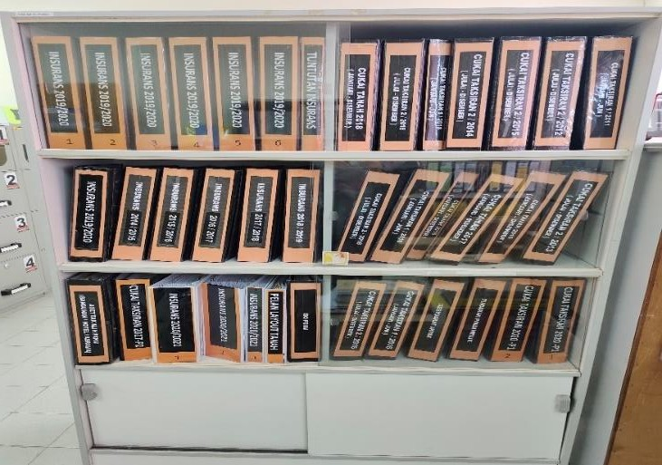
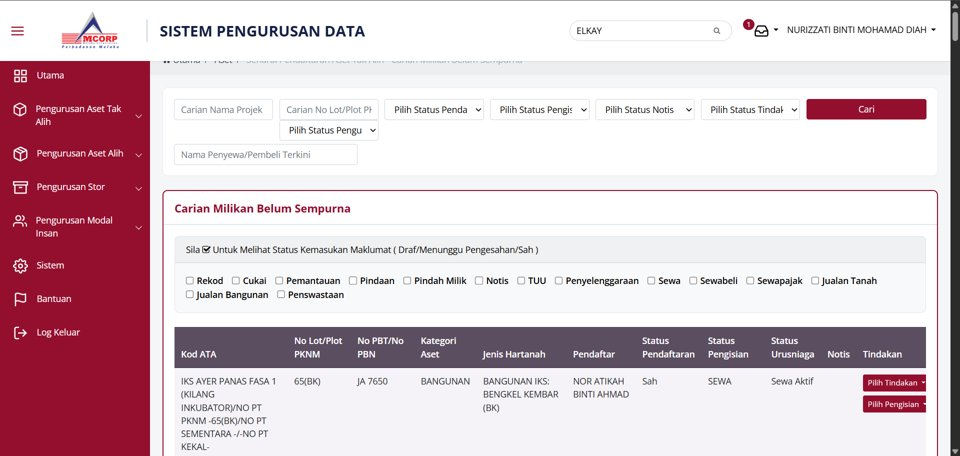
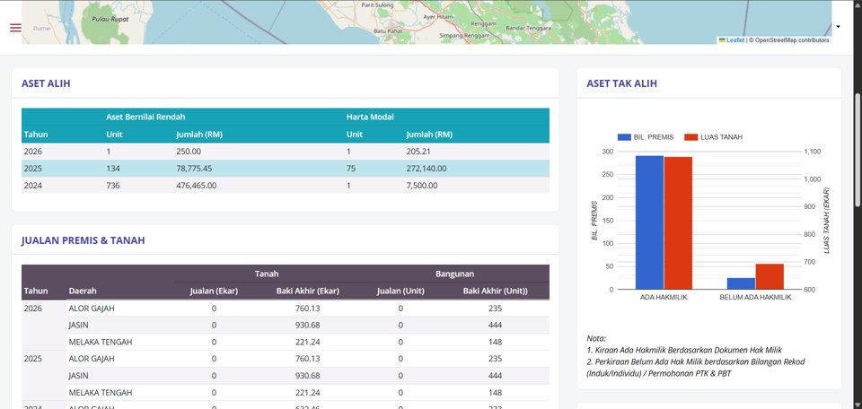
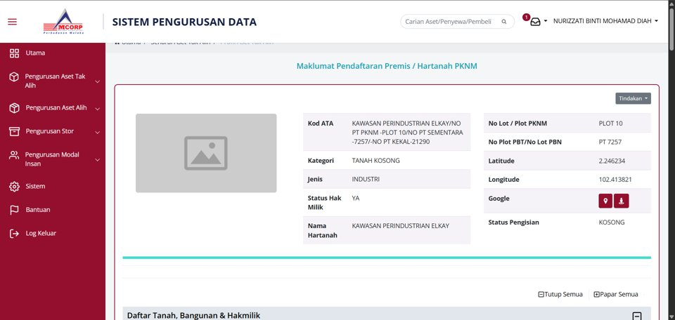
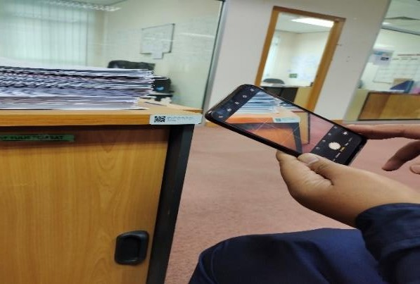
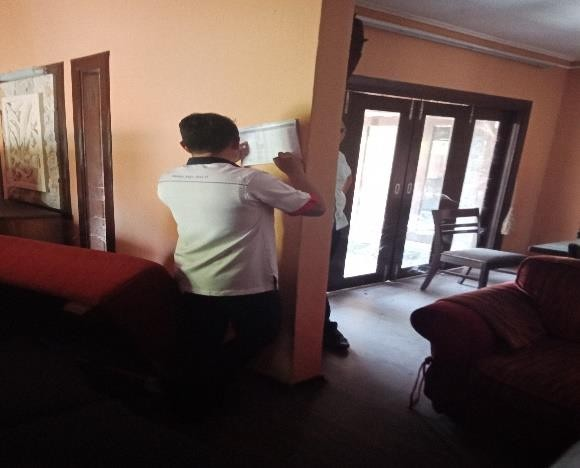
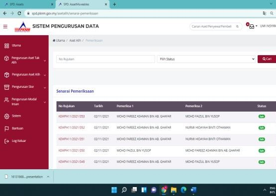
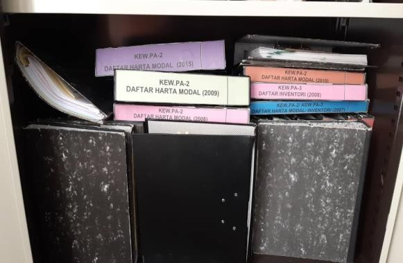
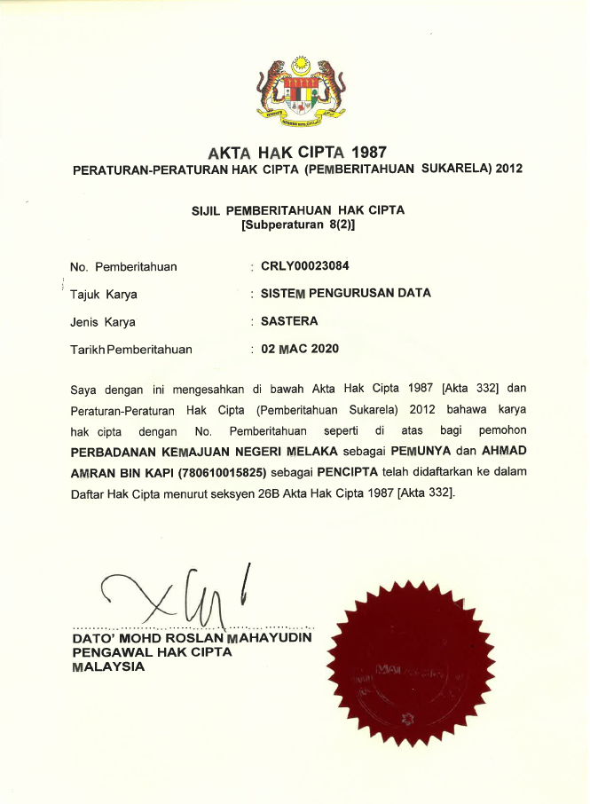

Pembangunan Sistem Pengurusan Data Bersepadu (SPD) · Anugerah Hijau Negeri Melaka 2026 · Perbadanan Melaka (MCORP)







| UKURAN | SEBELUM | SELEPAS |
| Kos bulanan | RM36,306 | RM18,153 |
| Kos tahunan | RM435,672 | RM217,836 |

